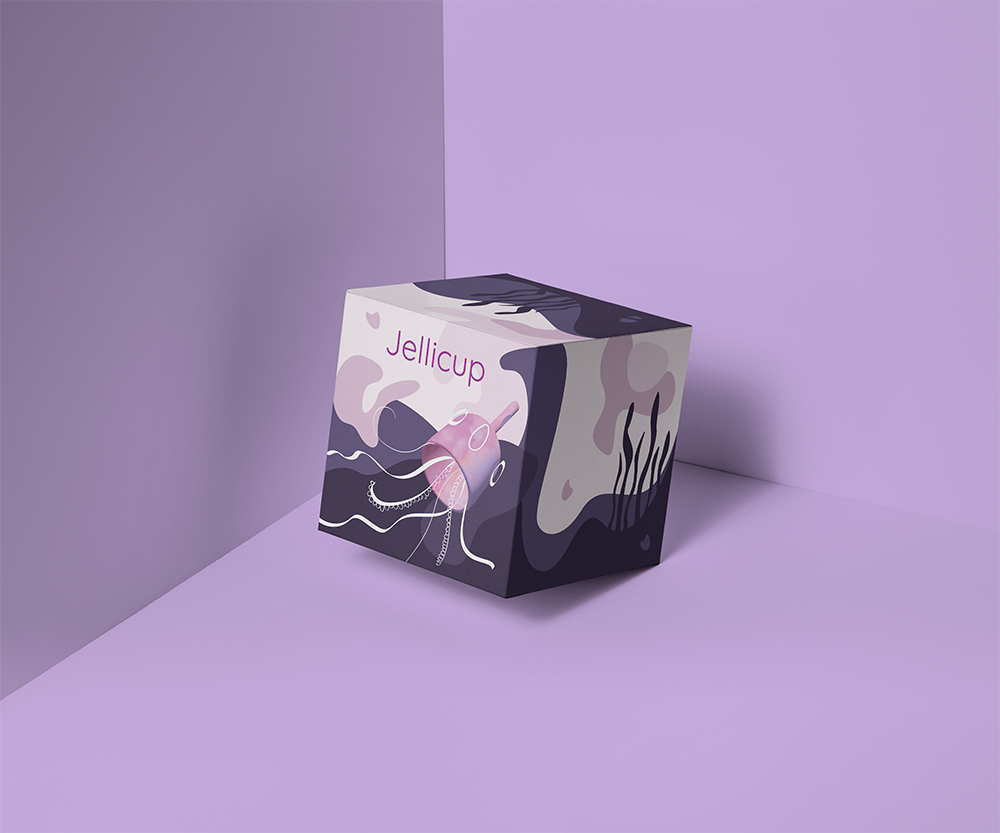
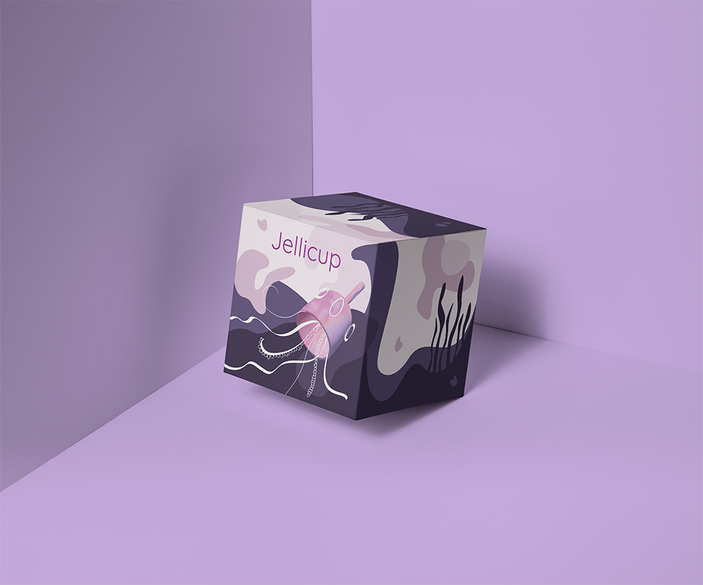

Jellicup
Sustainable Menstruation Community Awareness Project
Background and Audience
Jellicup began as a sustainable menstruation community awareness project. The community I want to address are people who menstruate, or get their periods. The associated problem is that a lot of menstruation practices are unsustainable, and using single-use menstrual products are extremely harmful to the environment. The business structure of this menstrual cup donates a portion of its proceeds to ocean cleanup initiatives.
The primary audience are teens that have just started menstruation, because when people start using sustainable menstrual products early, they are more familiar with and less scared of the product and process. The secondary audience are the parents of teens who have started menstruation, since they will want to buy something to help their kids adjust to getting their period. The tertiary audience is anyone who menstruates, since anyone who menstruates can use the Jellicup.
Research
About Menstruation
Menstruation starts from 11 to 14 years of age in biological females, and usually happen every month until around 50 years old, when menopause occurs. According to Om Prakash, a program manager of Uger Reusable Sanitary Napkins in India, “Men think menstruation is an issue for women and women think it’s related to sex. Thus, it’s often not discussed, especially in the rural areas and small towns” (Rakheja). However, the problem of sustainable menstruation practices don’t just apply to females; it is a worldwide problem that doesn’t just affect a single demographic.
Sustainability and Menstrual Practices
Compared to single-use menstrual waste products, reusable products save an enormous amount of natural resources and waste production, which benefits the environment. Although Menstrual cups are not biodegradable, they can easily be recycled and repurposed. According to a material scientist from the Ruby Menstrual Cups, burning an old cup is also safe. It will “produce some CO2 but in a tiny scale, since the quantity of silicone used for one menstrual cup is so small” (Thiele). Both washable products and menstrual cups only leave the biological waste that humans produce when it is time to change them, which significantly minimizes users’ carbon footprints. Coupled with both the rest of the project and this brief summary, an extended research paper can be found below:
Visualisation of Statistics
The infographic simplifies and presents visualized statistics about menstrual waste impacts on the environment so they are easy to understand. It is easily distributable as an image file, so it can be shared to reach and educate a larger audience. Some statistics are as follows:
- Pads take 500-800 years to biodegrade, and 0.5% marine plastic is tampon applicators (Edraki).
- 11,000 menstrual products in her lifetime. Those 11,000 items--disposable pads, tampons and panty liners--are landfilled (Aldair).
- 70 percent of menstruating women use tampons, which are made from cotton and rayon (Aldair).
- Over 528 tampons and pads used are equivalent to the use of one menstrual cup (Organicup)


Development
Packaging
In terms of the packaging, the bright colors and illustrations would also be eye-catching on shelves. The typeface used in its logo is “Quicksand,” which is a sans-serif font with rounded edges that appear welcoming.
 

Jellicup
Jellicup is a fictitious menstrual cup developed for teens who are starting their period. The cup is designed to be more flexible than other menstrual cups in the market, which makes it more approachable in terms of insertion, and more comfortable, especially for younger audiences. There are also a variety of colors on the cup for visual appeal.
Impact
Jellicup uses jellyfish illustrations with the cup, which references its ocean cleanup initiative tied to its business model. 4.8% of all proceeds earned from the sale of Jellicup will be donated to ocean cleanups, which is a reference to the 4.8 pieces of menstrual waste found per 100m of beaches found by the Marine Conservation Society.
Bibliography
Adair, Andrea. “
Taking Aim at Toxic Tampons.” Herizons, vol. 13, no. 3, Fall 1999, p. 15. EBSCOhost.
Brickell, Susan. “Menstrual Discs, Sea Sponges, and Other Genius Alternatives to Tampons and Pads.” Health, Meredith Health Group, 26 July 2018.
Bridle, Kerry L., and J.b. Kirkpatrick. “An Analysis of the Breakdown of Paper Products, Tasmania, Australia.” Journal of Environmental Management, vol. 74, no. 1, 2005, pp. 21–30., doi:10.1016/j.jenvman.2004.08.004.
Edraki, Farz. “Tampons, Pads, Menstrual Cups, Period Underwear: What’s Best for the Environment?” ABC Premium
News. EBSCOhost.
“Nappies Are a Waste and Hurt the Environment ... so I Created an Alternative.” Mail on Sunday, 12 May 2019, p. 67.
EBSCOhost.
“Making a Positive Impact.” OrganiCup.